Работа
С одной стороны, Доминикана и работа - вещи малосовместимые. Остров "Баунти", море, пальмы, пляжи - всё это навевает на мысли о чудесном отдыхе, ничегонеделании, праздном времяпровождении - но никак не о работе! И это действительно здорово, когда у человека есть возможность просто вкушать все прелести весёлой островной жизни и не думать о хлебе насущном. Но что делать таким, как мы, которым, для того, чтобы жить - работать просто необходимо? Оговорюсь сразу: если вы рассчитываете перебраться на жительство в Доминикану и надеетесь, что сможете здесь жить, работая - то мой вам совет: не стоит этого делать! Повторю слова одного человека с форума: если уж вы не смогли устроиться в России, ( Украине, Белоруссии) - то здесь вам придётся в сто раз сложнее!
Если вы читали мои предыдущие заметки, то знаете, что наш приезд сюда был, отчасти, вынужденным. Доминикана была выбрана, только исходя из того, что сюда не нужна виза и процесс получения вида на жительство относительно прост. Ещё находясь в России, я предполагал, что поиски работы могут быть непростыми, но утешал себя тем, что мы оба с образованием, английским и немецким владеем, как все русские - приспосабливаемые, так что уж не пропадём! В разговорах с друзьями заявлял, что никакой работы не боюсь и, если придётся, могу даже работать уборщиком пляжа или мыть посуду в ресторане. Каким я был наивным...
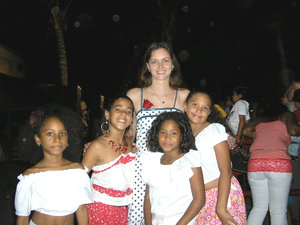
И вот мы в Доминикане.
Нам не до красот, ибо через две недели кончается отель с питанием. Надо срочно искать жильё и работу! Случилось Чудо, за которое надо благодарить Господа! Через неделю нашего пребывания на острове, жене предложили работу секретарём в международной школе, где всё преподавание ведётся на английском. Спасибо нашим русским друзьям, которые помогли нам в этом. От школы жене дали бесплатную квартиру(!) и зарплату в 200$.
Итак, жена работает, дело остаётся за мной.
И начались поиски...
Для начала я обошёл все отели и отельчики в нашем городе. Работы для меня не было. Никакой. Попробовал говорить с владельцами русских туристических фирм - получил отказ, с аргументаций, что у меня нет лицензии гида. Обратился к владелице автобусной компании с желанием работать водителем - и услышал, что белый водитель - это нонсенс здесь. Потом были рестораны, заправочные станции. Хозяину одной из них я сказал, что готов мыть машины за ту зарплату, которую получают работающие там гаитянцы - 100$ в месяц. Хозяин рассмеялся и сказал, что ему не нужен цирк на работе - белый мойщик.
Я поехал в другой город, в университет, зашёл в их компьютерную мастерскую и увидел, как механик, ничтоже сумняшеся, пытается засунуть планку памяти в AGP-шный слот! На моё замечание, что он совершает ошибку, он попросил не мешать ему работать. Я подумал: вот где есть применение моим познаниям в компьютерах и отправился разговаривать с ректором, чтобы предложить свои услуги. В ответ услышал: спасибо, не надо, наши мастера сами всё умеют!
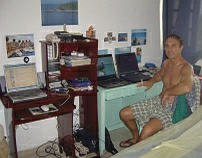
Я писал объявления, рассылал свои резюме по интернету - работы не было. Не надо думать, что я тунеядничал. Я готовил дома еду, стирал, убирал. Ходил на рыбалку и баловал нас рыбой и крабами. Учил испанский язык, общаясь с продавцами из магазина, помогая им в подсобке, и получая за это чашку кофе и бутерброд. Познакомился с владелицей маленькой немецкой турфирмы, и она стала меня время от времени приглашать переводчиком на экскурсии с русскими группами. Появились знакомые иностранцы, постоянно живущие здесь и стали меня приглашать, когда возникали проблемы с компьютерами.
Несколько раз мне удалось поработать на доминиканской фабрике по производству туалетной бумаги РАБОТА В ДОМИНИКАНЕ, БИЗНЕС В ДОМИНИКАНЕ, НИКОЛАЙ ПОШЁЛ ПО РУКАМ...
Знакомство с кинопродюссером дало возможность не только мне, но и жене, работать на различных проектах. Так с английской кинокомпанией мы работали на фильме "Alexander Hamilton" (нажмите ссылку, чтобы посмотреть видео), работали для датского Дома Мод "Bon'Aparte", работали с немцами, голландцами, американцами на фильме "Sugar".
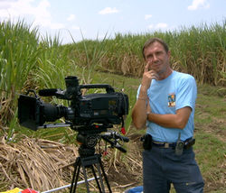
Но в один прекрасный день продюссер посчитал, что лучше нанимать глупых доминиканцев, чем кормить этих "умных белых".
Работы опять не стало.
Жену, которая проработала в школе уже два года, второй год работая учительницей - тоже уволили. Пршла местная доминиканка и заявила, что она хочет работать на этом месте.
А кто мы в этой стране - белые "туристы"...
То же самое получилось, когда Анна устроилась заместителем директора в отдел ренты кондоминиума COSTA DEL SOL, входящей в GROUP METRO COUNTRY CLUB.
В 2008 году директором был голландец Франк, который с удовольствием взял Анну к себе в заместители. Потом менялись директора, был мексиканец Виктор, испанец Мигель (заметьте, все иностранцы!) - и со всеми были прекрасные отношения, работа кипела , были довольны и владельцы квартир, и арендующие, и сама компания. А потом на должность директора был назначен доминиканец, который не придумал ничего лучшего, как уволить Анну и поставить на это место свою любовницу...
Владельцы апартаментов неоднократно высказывали свой протест против такого решения - но куда им тягаться с компанией!
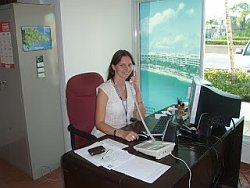
Я называю это: дискриминация наоборот. Отношение доминиканцев к нам, белым: вы все миллионеры, вы должны здесь только отдыхать и тратить свои денежки на нас. А уж работать у нас есть кому! На грязной и тяжёлой работе - неграмотные гаитяне; сантехники, электрики, водители - полуграмотные доминиканцы; владельцы фирм и компаний - зажиточные доминиканцы; управляющие ресторанами, отелями - давно живущие здесь иностранцы.
Так что подумайте сто раз перед тем, как рвануть в страну вечного лета. Попытайтесь представить, кем вы видите себя здесь. Не повторяйте ошибок тех, кто опрометчиво прилетел сюда в надежде на лучшую жизнь и теперь мечтает о куске хлеба, не имея даже денег на обратный билет, ( а таких примеров мы видим здесь предостаточно!).
Зарабатывать лучше в России, Европе, Америке.
А в Доминикане - только отдыхать!
UPD от 10.03.2013
И вот, после очередных двух лет без работы, Анна смогла устроиться администратором в резиденцию "Меридиана".
Зарплата $300. Это с высшим образованием и знанием трёх языков...
Зато есть работа...
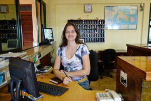
UPD от 30.05.2018
Анна продолжает трудиться в резиденции "Меридиана".
Работает только полдня, зарплата составляет $150 в месяц...
Я продолжаю сотрудничество с туристическими компаниями в качестве гида ЭКСКУРСИИ В ХУАН ДОЛИО.
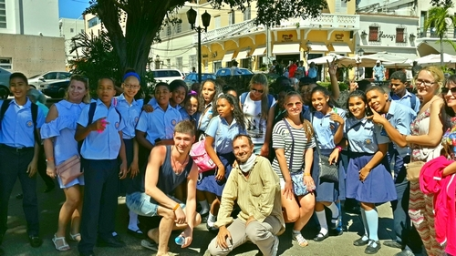
UPD от 20.03.2020На Земле началась пандемия коронавируса. Все страны закрыли свои границы. У нас закрылись все предприятия, миллионы остались без работы и средств к существованию. Я тоже стал безработным, внизу на фотографии наша закрытая фирма с транспортом в чехлах. Анна пока ходит на полдня в "Меридиану", где осталось несколько итальянских семей. Получает 250 долларов в месяц, на которые нам надо выживать.
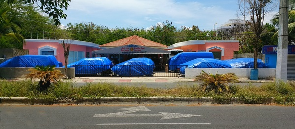
UPD от 3.03.2021Прошёл год с начала пандемии. Мы продолжаем жить в условиях карантина и комендантского часа. У меня целый год нет никаких возможностей для заработка. Будущее видится весьма плачевным. Анна работает за 250 долларов в месяц...
Надежда только на ПОМОЩЬ ХОРОШИХ ЛЮДЕЙ.
У нас, наконец-то, отменили карантин и комендантский час. И с августа открылось авиасообщение с Россией, полетели русские туристы. Нам стало немножко легче, потому что у меня появились экскурсии и можно заработать небольшую копейку.
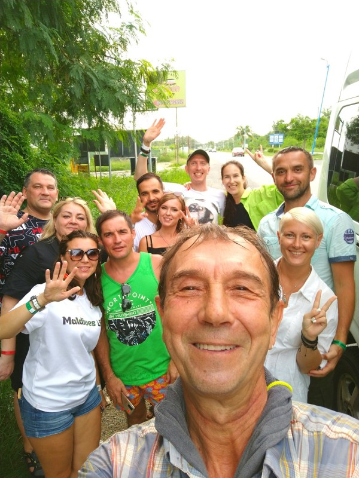
UPD от 9.12.2021Печальная новость.
Компания FAENZA, которая была основана в Хуан Долио более 30 лет назад и в которой я работал гидом, прекратила своё существование...
Хозяин, увидев, что туристов в Хуан Долио практически нет, распродал все машины, которые сдавались в аренду и начал перестраивать офис под магазин. Нет больше ни аренды, ни экскурсий. Так что я снова оказался не у дел.
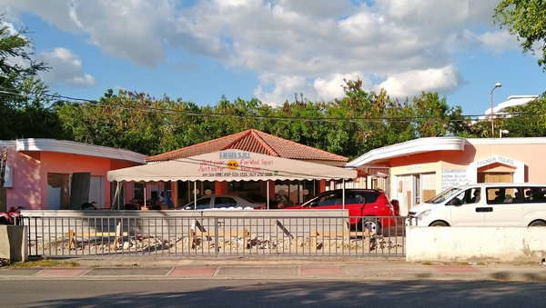
UPD от 1.01.2022Хорошая новость.
В Хуан Долио остался работать только один отель системы "всё включено", но, так как наша компания закрылась, то у меня пропала возможность предлагать экскурсии даже тому небольшому количеству туристов, что приезжают в наш посёлочек.
Но одна компания, находящаяся в Байяибе, предложила мне работу и теперь я снова могу ездить на экскурсии в столицу с русскими туристами.
Кто отдыхает в районе Ла Романа и Байяибе - ОБРАЩАЙТЕСЬ ЗА ЭКСКУРСИЯМИ!
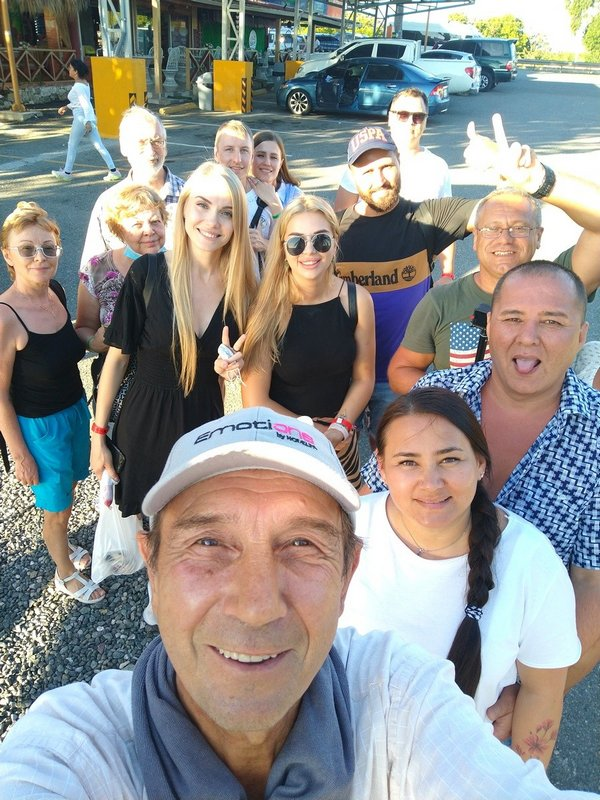
UPD от 14.03.2022Вот и всё...
Радость от наличия работы была совсем недолгой.
Пятого марта состоялась последняя моя экскурсию с русскими туристами в столицу.
И теперь россиянам можно забыть о Доминикане на многие годы, а нам на эти годы забыть о работе.
К сожалению, из-за начавшейся 24 февраля "военной спецоперации", а попросту войны, началась новая эпоха, которая повлияет на весь мир.
Не представляю, как мы теперь сможем выживать...
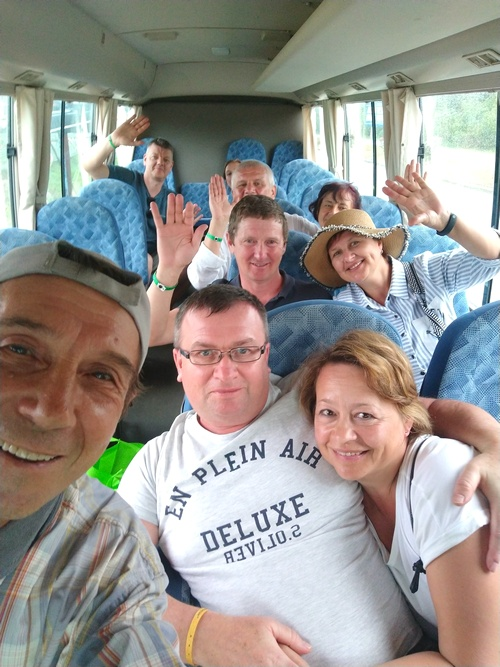
UPD от 14.07.2022Из-за войны, конечно, никаких туристов из России или Украины больше не будет...
Но мне немножко улыбнулась удача, так как набралась группа русских, давно живущих в Германии, вот я и провёл экскурсию на русском и немецком языках.
Это была единственная экскурсия за три месяца и когда будет следующая, не может сказать никто...
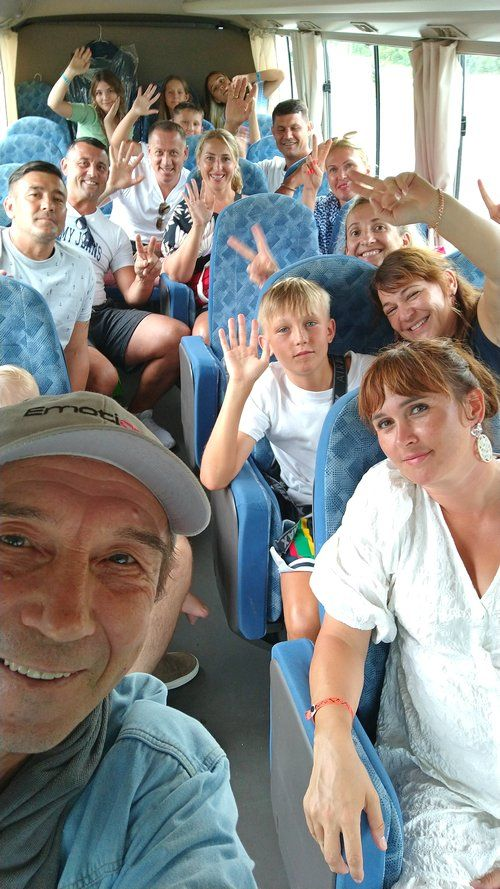
UPD от 28.04.2023Идёт второй год войны в Украине.
Украинцам, естественно, не до туристических поездок, Россия находится под санкциями и о туризме в наши края говорить тоже не приходится.
Второй год я сижу без работы в туристической области.
Эпизодически бывает возможность кого-то встретить в аэропорту, кого-то отвезти в аэропорт, кого-то свозить в супермаркет, но это совсем не спасает ситуацию...
Работает только Анна и на её зарплату мы еле-еле можем оплачивать аренду жилья.
В общем, перспективы довольно мрачные...
UPD от 01.02.2024
На туризме для меня поставлен жирный крест, по-крайней мере, видно, что туристов славян у нас не будет долгие годы, если не сказать, что это теперь навсегда...
Так что приходится искать разные другие возможности.
Жизнь подбрасывает иногда редкие варианты для заработка, мне удалось принять участие в массовке при съёмках фильмов.
"VENENO", "THE MUTINY HOTEL", "HOTEL COCAINE"
К сожалению, такое бывает не каждый месяц, так что отсутствие денег продолжается.
Мы благодарны тем, кто изредка оказывает нам материальную ПОМОЩЬ.
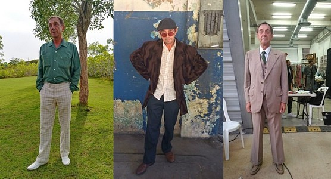
UPD от 30.01.2025
О работе больше писать нечего, ибо её попросту нет.
Анна ещё держится, работает в Меридиане, получая 250 долларов в месяц, которых недостаточно даже на аренду жилья.
Надежда только на ПОМОЩЬ ХОРОШИХ ЛЮДЕЙ.
UPD от 25.04.2026
На день рождения судьба сделала мне неожиданный подарок - немецкие туристы попросили организовать им частную экскурсию в столицу. Им так понравилось, что через день я организовал им ещё одну экскурсию в пещеру.
Итого - всего две экскурсии за 8 месяцев...
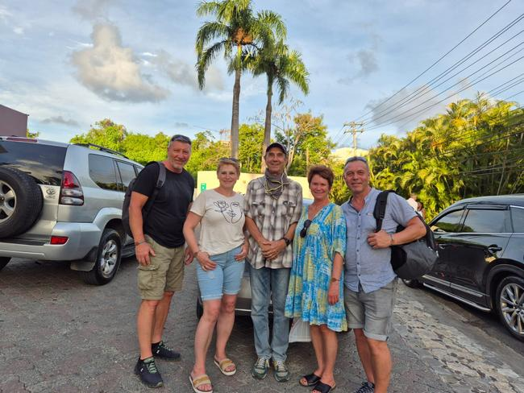
Надежда только на ПОМОЩЬ ХОРОШИХ ЛЮДЕЙ.